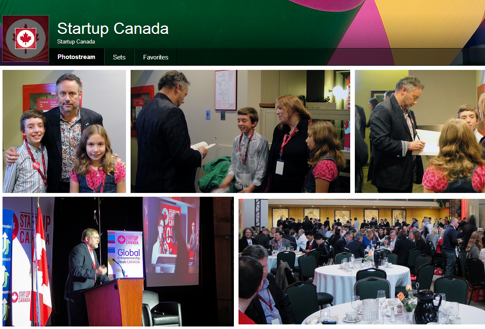
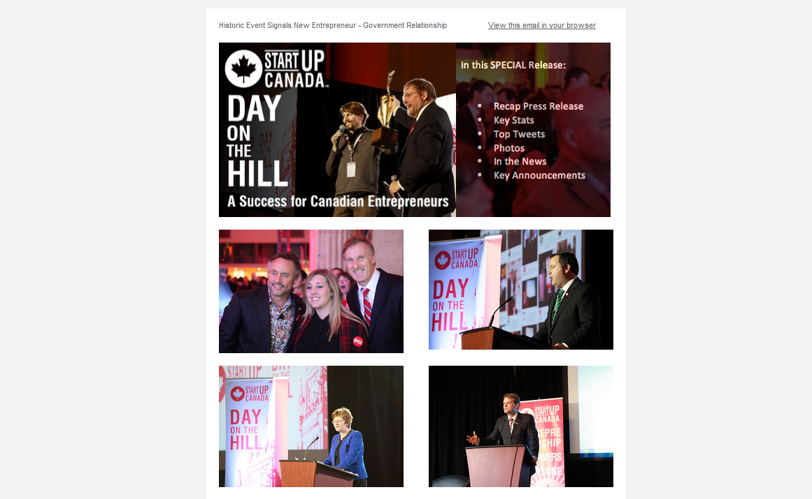
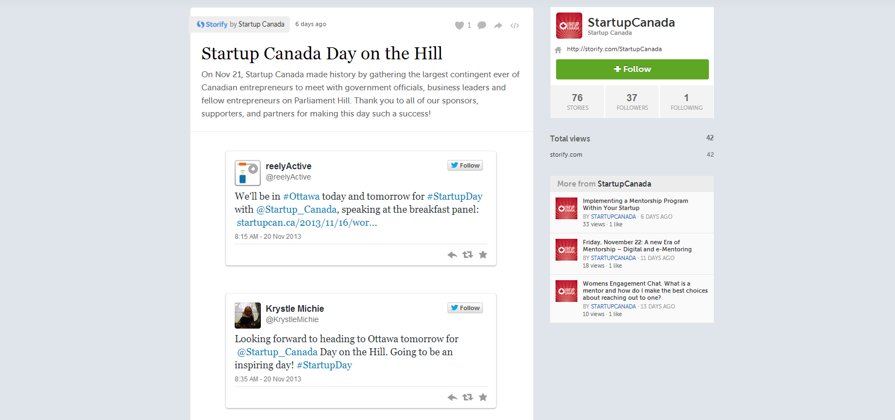

Startup Canada recently made history by gathering the largest contingent ever of Canadian entrepreneurs to meet on Parliament Hill with the nation's elected representatives to advance the national entrepreneurial agenda through a discussion of entrepreneurship and its important role in the Canadian economy. The Day on the Hill took place on 21 November 2013 at Parliament Hill, and was attended by more than seven hundred people. Seven federal cabinet ministers attended, alongside five MPs and over four hundred and fifty entrepreneurs.
The Startup Canada Day on the Hill featured seven key events, which are highlighted below. More info can be found on the official StartupDay website.
Strengthening Canada's Entrepreneurship Ecosystem - One Community at a Time
Startup Canada kicked off the day by hosting Community Leaders from across Canada for a morning Breakfast Reception with their Members of Parliament and government leaders to celebrate their impact in driving forward entrepreneurship in their local communities.
Government Leadership in Strengthening Canada's Entrepreneurship Ecosystem
This panel highlighted a number of the programs and champions leading the way within the public service to position Canada the world’s destination for innovative entrepreneurs. The panelists are themselves intra-preneurs who understand the need to bring together government and grassroots communities to transform the landscape for Canada’s entrepreneurs.

Starting Up Sparks Street
The Sparks Street BIA is working to build this pedestrian mall into a hub for entrepreneurial activity in Ottawa. Given its unparalleled location at the doorsteps of Parliament, building up entrepreneurial activity on this strip is important for Ottawa and Canada.
Strengthening Canada's Entrepreneurship Ecosystem to Advance Entrepreneurship
Through national and local initiatives, campaigns and collaborative efforts, Startup Canada is working to create a national culture of entrepreneurship in Canada and to remove barriers to startup growth so as to encourage more high-growth companies that can become anchors in their communities.
Panel: Everyone has a role in empowering entrepreneurship
Startup Canada supports, connects and amplifies the reach and impact of more than 400 organizations across Canada that work to advance entrepreneurship across all sectors through the provision of services, products, education, training, resources, mentors, capital and space. Startup Canada is a platform to unify and give a voice to the Canadian entrepreneurship community.
Practical Session: Grow Your International Trade Network with Export Development Canada
Targeting start-ups who are, or are planning to, sell outside of Canada. At this event you will be able to meet trade professionals who can help you find new foreign customers, work with your bank for more financing, seek equity investment or understand how EDC financial tools and services can make your company more competitive both domestically and abroad.
Startup Canada Day on the Hill Reception
Bringing together government and business leaders, entrepreneurs, media and key stakeholders in the Canadian entrepreneurship ecosystem, this landmark reception is a national celebration of Canadian entrepreneurship and a demonstration to Canada's leaders the momentum of both the impact and scale of the grassroots, startup movement in Canada.
Startup Canada produced a blog post to promote University of Ottawa and its partnership with Startup Canada.
Startup Canada released several pre-event and post-event media packages for Day on the Hill, which are now posted on the Day on the Hill website. These materials were sent out to various media sources in order to maximize the promotion of the Day on the Hill. More information on these media packages are available below.
All photos from the Day on the Hill event are available on Startup Canada's Flickr Photostream and on Eventpeeks. Both are shown below.
Leading up to the Day on the Hill, Startup Canada hung a number of flags on Sparks St. in Ottawa to promote the event and to celebrate the gathering of entrepreneurs and government leaders. The flags were up for two weeks.
A vast number of media outlets published articles promoting the events at Startup Canada Day on the Hill. The event was covered by IT Business, Financial Post, iPolitics, MarketWired, ApnaHub, MarketWatch, Exchange Magazine, Centretown News, PIVOT Magazine, and the Government of Canada. These articles are provided below.
Following the Day on the Hill, Startup Canada emailed a detailed overview and recap of the event to its extensive network of followers. This e-blast is provided below.
Throughout the day, attendees of the Day on the Hill tweeted about the event, using the hashtag #Startupday. #Startupday trended in Canada on the day of the event, and overall the hashtag #StartupDay reached 1 025 869 people and generated 9 838 783 impressions online. During the days surrounding the event, @Startup_Can had 1 500 interactions with 493 users, 482 new Twitter followers, 721 mentions and 561 retweets. A summary of the tweets during the Day on the Hill is provided below.
Startup Canada promoted the Day on the Hill extensively through its vast network of followers on Facebook, Twitter, LinkedIn, and Google+. Throughout the promotional period, Startup Canada was able to generate 7 623 pageviews, 26 shares, 126 likes, and 149 920 impressions. More detailed information is provided in the charts below.
At Startup Canada Day on the Hill, held last month in Ottawa, entrepreneurs and government leaders alike agreed a working relationship is needed to ensure Canada becomes and remains the best place in the world to start, operate, and grow a business. Beyond the event in Ottawa, Startup Canada Day on the Hill spurred a national conversation online, with the hashtag #startupday trending on Twitter across Canada. Startup Canada celebrated this successful meeting of entrepreneurs and government at Startup Canada Day on the Hill with a flag installation on Sparks Street in Ottawa. The flags were in place until November 29th.
Edward Kim
Data Coordination & Reporting Lead
John Henwood
Strategic Relations Assistant
Entrepreneurship Empowers Everyone TM/MD
© 2013 Startup Canada. All Rights Reserved.